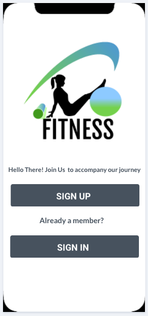
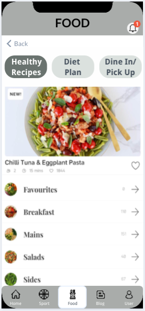

Project Idea
Overview :-
The project idea is to create a ‘fitness’ application based on Australia for mobile devices that excels with a combination of sports, food and blog.
Sports - The idea is to bring out a healthy and traditional way of being fit for the users for which the application consist of information
such as availability of the nearby grounds / players according to the user’s preferred location for them to engage in several sports
and also consist of various exercises to be followed.
Food - In this part consists various recipes to make at home, different diet plans,
and has an interesting option for the users to choose from the displayed food options which is awarded as healthy and tasty recipes and connects them to the
respective restaurants unlike other fitness application and also allow the users to make orders with the restaurant which will be kept prepared for the users
to take-away or the users can directly refer to the restaurant and visit them in person to dine-in directly by easing up the process for those people who tends
to hesitate to cook at home sometimes and still wants to keep up with the healthy meal plan, which would serve as a motivation and as well as help the users to
adopt a healthy life-style.
Blog - This serves the main purpose of making the users want to use our
application, by maintaining a page for users to share their experience on using our application and how helpful it was, putting
up motivational videos, and also provides a local chat box facility for users to talk or share their perspectives to other users
which might help them realise that they are not alone in their weight-loss journey or in their difficult times.
Motivation :-
Doing regular exercise is essential for everyone under normal circumstances as it helps people live a longer, healthier and a happy life.
Although, it is these times like covid-19 makes it not possible for people at any age considering that they workout almost everyday or
even barely, who might even find it difficult to follow a proper diet plan due to the frustration, depression or even because of the time
they spend mostly at home in-order to stop the spread of covid-19 making it easy to forget the daily routine and leading to stress-eat,
that can be caused because of the lockdown implemented with concern to the pandemic. The government of Australia suggests that it is
important to stay active in-order to reduce the risk of health conditions like stroke and heart disease, to control gaining more weight,
to reduce stress and anxiety caused by this pandemic, and to improve sleep.
This application not only provides benefit during the normal times by helping in boosting up the immune system which might be of a great
help to an individual to help prepare their body to fight against any virus leading them to fall sick, but also during such difficult
times like covid-19 where one doesn’t want to go to gym, health clubs or fitness centres physically but just use our application instead
which gives them the strength to be kept motivated. One of the other main reasons to implement a fitness application is the statistics
below showing the projected growth of users using fitness applications from 2017 to 2022 which is to be increased from 62.7 million to 87.4 million users.

Landscape :-
Other similar applications to fitness that are available in the market includes - Daily Yoga - teaches yoga using videos, Foodility - allows to track food habits, Nourishly - Connects users to well trained medical team, Yummy Recipes + Shopping List - suggests recipes based on dietary restrictions and allergies, Waterlogged - focuses on keeping the users hydrated, and other meditation, mental health and dance related applications.
Our competitors are as follows:
MyFitnessPal - One of the popular applications containing 6 million food suggestions. Allows users to set exercise and diet goals.
Lose It - is another health tracker that includes an easy-to-use food diary and exercise log. Allows to connect a pedometer or other fitness device.
Other competitors include Noom, Fatsecret, S Health etc.
All the applications which are stated above are focused on delivering customer satisfaction through giving in some valuable ideas to improve the health and lifestyle for all that matters which is quite similar to our fitness application. But, what we deliver is different comparing to other applications out there as we have created an opportunity for our users where they can find several unique aspects such as sports - including suggestions showing nearby grounds, players to play with etc, Food - Providing healthy recipes, recipes that can be ordered / dine-in directly, Blog - Providing motivation and allows to share successful stories of users all in one platform.
Detailed Description :-
Aims
The aim is to have the fitness application prototype fully completed as the primary objective of this project. The application comprises of three main features, a sports service that enables users to seek out nearby sporting grounds and players, meanwhile the virtual coach application will allow users to connect with a personal trainer, group training session or attend a session for general inquiries. The second feature is a food service which presents a series of healthy recipes to choose from that caters to varying dietary requirements as well as a food ordering system that allows the user to search for local healthy eateries. The blog and community aspect allows users to write about their own experiences related to fitness and have a space for the community to discuss a range of topics related to anything related to health or fitness. The deliverable that our group will present is a functioning prototype of the mobile application that has all the proposed user interface elements and functions of the app, including graphical designs, icons and buttons. We chose to develop a prototype using an online program named Marvel that enables us to emulate the appearance of a mobile device without having to manually code an actual application. This method is a viable option as it is an efficient method of getting the design and functionality in place, while being simple for our group members to use.
Goal One: Devise the necessary functions and features of the application.
Our first goal is to come up with all the necessary functions and features needed in the application. To reach this goal we were required to discuss and brainstorm the concept, everything from the colour scheme of the application, what icons are needed on the taskbar, the placement of user interface elements and most importantly, the functionality of each of the three sections. This goal is crucial, as a good foundation is required for understanding the direction and scope of this application. The sports section requires the implementation of Google Maps and a search bar, while the virtual coach section requires a booking system and a video call service to connect with their coaches. For the food section, a database of healthy food recipes is required, the implementation of a food ordering service and a connection to a payment system would be added to application. For the blog and community section of the app, it would need to be connected to social media platforms, where they can also display articles written by users themselves on the blog. The chat feature is available to all users and would also link with the sports section, allowing users to communicate either between players in their community or their personal trainers.
Goal Two: Design the user interface (UI) elements of the application on prototyping software.
The second goal is to be completed once the initial drafting and conception phase is complete. Using Marvel to design the prototype, our group will set out to each design a part of the app that demonstrates the intended functions described above. In this stage, the overall appearance of the application as well as the UI elements will be implemented, such as a taskbar to navigate between features, notifications, the layout of the buttons and graphics for logos and icons. The main reason for this particular goal is to demonstrate a tangible piece of the project that can highlight the key functionality of the fitness application. This goal is a major priority in this assignment as it actually shows our skills being applied into developing a proper concept of the fitness app and acts as a supplement to this report. A major part of our work effort has been directed at getting the prototype complete and fully functional. As Marvel can emulate the app’s function, we are able to demonstrate how the app navigates between pages and has working buttons, taskbar and notifications tab.
Goal Three: Develop the application through Android and Apple SDKs to run on mobile devices.
This goal is intended to extend beyond the current scope of our deliverable and is more of a future goal to strive towards, whether it be handed over to a development team or a future idea to be implemented once our skills have been developed further. Therefore, it can be considered as an extension of our project which discusses the technical aspects of app development. Once the prototype is completed, the next step would be to develop it into a fully functional application, where it can be run on both Apple and Android mobile devices. One major factor in actually publishing the app is the costs associated with obtaining a membership or registration for the Apple Developer Program/Android Development. Secondly, app development would require a high level of understanding in Swift and Java languages, meaning that we would have to source a team of developers or learn the skills ourselves over time.
Plans and Progress
The initial conception of the idea began from a combination of ideas generated from previous group member’s assignments, either from Assignment 1 or another subject. During Assignment 2, all group members held a group meeting together on Microsoft teams where we all discussed what project ideas we had come up with individually. We initially took the concept of designing a mobile application to be well suited to the strengths of our group, as some members had already experience with prototyping software such as Figma during their studies in User Centred Design.
The decision to base the app around fitness was a combination of applying a sports app used for locating players and grounds with a food delivery app. This eventually led to our group further refining the idea into an app centred around wellbeing and physical fitness, that could also function as a platform for users with similar interests to interact in the community section of our app, either through blog posts or discussions on the forums.
Initially, our group proposed the idea of implementing a food delivery service into the application akin to Uber Eats, however we eventually decided to implement a dine-in and pick-up feature on the basis that it simplified the app’s functionality to focus more on the healthy recipe options and diet planning.
Another feature discussed in our group was how accounts were to be implemented on the basis that not all users would be willing to share their personal details, as many would just want to use the basic functions of the app like a quick search around their suburban area for gyms, sporting grounds and healthy eateries. By implementing a guest feature, users that are sensitive with their personal information such as names, email addresses and phone numbers, wouldn't be barred from using the application. Whereas some users would want to calibrate their diet and workout routine, therefore by creating an account, they can have full access to the application’s features including making bookings with their trainer, access to the user profile and chat feature.
The overall design of the app has undergone a series of changes throughout the prototyping stage, most notably the colour scheme and taskbar, which was originally a darker grey and only had four ions. Over time, the design was refined into a sleeker design, with a lighter grey background, consisting of labelled icons, which we considered to be more user friendly. Another new addition to the overall design of the app was the notification button in the top left corner and the user’s profile, where they could keep personalised information about their own diet plan, shopping list, blog posts and fitness routines catered specifically towards the individual user.
Referring to the aims and goals previously mentioned above, upon completion of the assignment, we will have the aim and the first two goals completed. As shown in the prototype description, we have demonstrated all the features of the project idea that we have devised during the planning phase in goal one, and have completed the user interface elements of the application with all the necessary functions in place as described in Goal Two. As previously mentioned, Goal Three was created to serve as a future target to reach beyond the scope of this assignment. It serves as the final stage for an app development to pursue if the project concept is received well.
Roles
-
Lead Developer – Danial Tariq
For our project, the team decided that Danial was best suited for a leader role as his traits best represented a ‘leader’. The responsibility of lead developer is to direct the development team in the design, development, coding, testing and debugging of applications.
-
Front End Developer- Vinkal Patidar
This role best suited Vinkal as he aspires to become a Front-End Developer. Vinkal will design and structure our webpages and he will develop features to enhance the user experience. He must work alongside with Back end Developers, Graphic Designers and User Experience Designers to ensure all elements of web creation are consistent.
-
Technical Designer – Khavya Mahesh
Khavya will list the technical requirements of the architect and ensure the project is meeting deadlines. Khavya will also be a part of the hiring process for the new team members and will be the mediator between stakeholders. Her key role is to develop and mange technical specification packages for apparel prototypes.
-
User Interface Designer - Tianqi Shen
Although Tianqi aspires to become a web developer, but user interface designer is somewhat relative to be a web developer as it is important to keep usability in mind when developing sites. His key role is to Execute all visual design stages from concept to final hand-off to front-end and back-end developer.
-
Database expert - Junjie Zeng
The role best suited Junjie as hid ideal job is Data Administrator. He will maintain our database servers and he will develop processes for optimizing database security. The role may include capacity planning, installation, configuration, database design, migration, performance monitoring, security, troubleshooting, as well as backup and data recovery.
-
IT Operations – Alex Chan
Alex will oversee the day-to-day operations of the project to ensure we have the latest software architecture and the correct infrastructure. He will be responsible for bringing the new talent on board and overlooking them. He will also manage teams of technicians, system engineers and other IT staff.
Scope and Limits
Our fitness application helps the users to live their life to the fullest extent by allowing our users to keep track of their daily exercise, participate in our community activities, consume healthy recipes by either following our tips or even buying from the outlets mentioned in our application, by taking part in sports and also by getting trained virtually. Health and fitness is always a priority among people but it's not easy for everyone to make up their mind to engage in activities that pave the way to good health and happiness. Our application’s goal is to change the perspective of our customers and help them get onto the track by motivating in ways to show we care for them with the help of our blog page. It is not just any fitness application, but it is the one and only that allows the users to participate in various forums making their life a lot more fun, exciting and engaging. Our deliverables focus on our customers happiness, their health, their day-to-day activities, turning them into fit and obedient people and also to make income from that.
If someone asks for the result by implementing a application with regard to fitness, we’ll be able to show our growth, the number of users, number of success stories as we aim to change at least 1 out of 10 persons life by bringing them the best application of all time focusing on what it is best at which is guiding customers in a right way, teaching them how exactly everything is done and bringing our target market close to their goal of becoming healthy in their personalised way by indulging them with the opportunities. Our application will never be a bad example for someone who is fat nor be a factor that might make some people feel insecure. It is all about being healthy even when someone’s fat or lean and that is exactly what we’ll be trying with our given time.
Our application may not be fully developed, as it still has a lot to give in to our customers. We first introduce our idea and perspectives to our users such as the idea of buying healthy food, giving diet recipes, or having a virtual coach which will constantly be updated according to the taste preferences, demand and supply, and technology. For now the users of Australia get to install the application from the App Store and later we are planning to expand our target market to different countries around the world according to the response rate. The users will be provided with their customised and favourite diet plans, exercise plan, and a lot more fun stuff. We are looking forward to adding more features for specific age groups like for old people, children and also infants, and planning to collaborate further with more exciting and popular brands in future to add more specifications in our application as we strive to increase our customer satisfaction rate at any level.
Prototypes
To see the Functional Prototypes - Click Here
Login Screen:

Our Application’s login screen which is prompted as soon as the user opens the app for the first time after the installation process. But the process of login doesn’t repeat when the user opens the application for the next time unless he/she wants to. The user can always change their preferences in the future. This option is enabled for the purpose of convenience of our users (For more information and depth in the application’s functionality please click on the link above).
Home Screen:
Our Application’s home screen which contains options for the users to choose and wander into. It displays the 3 most important features of our application - Sport, Food, Blog (For more information and depth in the application’s functionality please click on the link above).
Profile:
The profile screen shows our user’s previous choices made, their personalised version of data which was saved / used by our users.
Sports:
Shows availability of grounds and players. In particular, the users can search for grounds using their own map, can select players, and can choose the level. Also, there is a virtual coach available for users to refer to if there’s any assistance needed by booking an appointment which includes the process of selecting the type of assistance required or the users can just simply opt to join in a fun session (For more information and depth in the application’s functionality please click on the link above).
Food:
The food screen shows various recipe options, personalised or common diet plans for the users to surf in and also allows the users to buy from certified restaurants by choosing the Dine In / Pick-up options which will redirect the users to the respective restaurants (For more information and depth in the application’s functionality please click on the link above).

Blog:
Allows users to share their thoughts and success stories and also provide them with motivational content. It also enables users to chat and mingle with other users via the chat option whereas the community page has got some interesting public forums where the users can introduce themselves, can do chit-chats, take part in debates and a lot of fun stuffs (For more information and depth in the application’s functionality please click on the link above).
Tools and Technology :-
Tools:-
-
HTML/Text Editor
-
Image Editors
-
File Transfer Protocol Tools
-
Analytics Tools
-
Browsers
Technology:-
-
C#, C/C++ programming language
-
Swift programming language
-
Java, JavaScript, Python languages
Hardware Requirements:
IOS:
-
A Mac OS computer to develop iOS applications.
-
Latest version of Xcode (the Apple SDK for creating iOS apps).
-
An iOS device. To test features such as Camera, Push Notifications, and accelerometer, you need an iOS device.
Android:
-
Latest version of JDK.
-
Android SDK.
-
Apache Ant (Another Neat Tool) - An open-source tool that automates aspects of the Android build process.
-
Gradle - An advanced build toolkit that manages dependencies and allows you to define custom build logic.
Windows:
-
.Net framework 2.0 & 3.5 - For the Build Release mode.
-
.Net framework 2.0 & 3.5 4.6.1 - Required for Offline Objects feature for both Debug and Release modes.
Prior Experience with the tools and technologies of our group members:
Danial (s3848713) has prior experience working with java, javascript, html, css, python, php, and mysql at a basic level from the courses he has done previously and also via the internet. Developed many websites as part of the course structure and also designed few programs.
Khavya (s3687324) has experience using HTML / TEXT EDITOR, css, javascript, php as part of the major subject -E-Business. Did a course on python (Level-1) and java - used to build basic applications, also built many websites from scratch and via wix as part of the assignments.
Junjie (s3715989) has experience with HTML, CSS, Javascript and other tools such as visual studio code, FileZilla etc. Built an online shopping website as part of the E-Business course using the relevant tools.
Tianqi (s3820826): New to the IT field and these tools, but start to study in terms of HTML/Text Editor, CSS, Java, JavaScript. For his first year learning IT major subject, he has created a personal website and makes some simple java programs.
Alex (s3781407) has prior experience working with HTML and C++ from previous courses completed during his study. Skills demonstrated using programming languages include creating websites alongside using code to manipulate hardware components.
Vinkal (s3760660) has experience in HTML/Text Editor , Java, javascript, MySql and Python. Have worked on many Java projects since high school and am currently studying most of these languages and tools as part of my course.
Testing
Our application will undergo testing with different platforms - OSX, windows, and android and real devices. In-order to select the device we are going to research for the most widely used mobile in the market with different screen solutions by paying attention to the compatibility, connectivity, memory size etc. We will be using simulators to test our application.
We will be approaching organisations or people who work in fitness streams like gym trainers, models etc, people who are public speakers or motivators who are very particular about fitness, gym goers, Youtubers (especially the ones who share their fitness journey) etc. We shall be contacting distributing channels like google play, direct delivery, App Store, etc.
The types of test to be conducted are:
Functional testing:
This is conducted to make sure if our application is tested as expected and in accordance to our requirement specifications which includes - installing and running the application, field testing, interruptions testing, constant users feedback testing, update testing, Device resources testing.
Usability Testing:
Focuses on testing the convenience of using the application. This test is to be conducted on criteria such as Satisfaction, Efficiency and Effectiveness.
User Interface Testing:
We will prepare our mockups which are constantly updated based on our testers suggestions.
Other tests include - Compatibility / Configuration testing, Performance Testing, Security Testing, Recovery Testing, Localization testing, change related testings, Beta testing, Certification testing, etc…
Each test may require unto 5 - 10 users. These test users will be contacted through references, official email, friends of friends and family (low cost), and via various links.
Timeframe
| Week 1 |
Assignment-
Individual website
Milestone achieved: basic knowledge about HTML/CSS
|
| Week 2 |
Assignment-
Individual website
Milestone achieved:start to try some various codes to make website better
|
| Week 3 |
Assignment-
Individual website
Milestone achieved: gain more techniques to further improve website
|
| Week 4 |
Assignment-
Individual website
Milestone achieved:finishing off the individual assignment
|
| Week 5 |
Assignment-
start to discuss our own website in a new group and decide the project idea
|
| Week 6 |
Assignment-
start to discuss our own website in a new group and decide the project idea
Furthermore, diving different tasks into each group member
|
| Week 7-11 |
(In the long term)To start out. We are lacking sustainable useful technology knowledge to apply into our realistic application. For this single part only, it will take about at least two years but the limited time is about only a few weeks, including studying a higher level of knowledge which could be used to create a real application instead of a prototype. To achieve all these functions, software engineering knowledge is essential, because without software engineering, this application could not show up even if the content is so amazing for users to use. In addition to that, for the three different sections in our application. For each part, the expected time should be around half a year totally. |
| Week 11-16 |
(In the long term)In the next stage, our team will be spending about several months to have a further investigation into the market, finding out what users desperately want. This stage is meant to help our application to gain more good feelings from users so that when our application finally is published, users would be immersed into our fitness application. With regard to investment, advertisements should be taken into consideration. To acquire more attention from the public, it is rational to make a suitable and proper way to advertise. For instance, online advertisement is an eligible method both for efficiency and cost-effectiveness. |
|
So all in all, it will take about four years to totally accomplish this application. During this period, more new knowledge would be put into it. |
Risks
Hard to achieve or accomplish the specific knowledge that would be used into application, leading to poor assignment given. If someone really causes some problems, which would reduce the efficiency of other group members, because the group, as a whole, it is common to help with each other.
Have no time to do this application, because everyone is engaged in not only one class, all of us would contribute our time into other subjects. Codes which are needed must acquire a long time to run.
(In the long term) Firstly, to accomplish the various functions which would be applied in our fitness application. Complicated knowledge must be required in a large amount, because it is hard to master these intelligences in a limited time. As a result, if the knowledge we learnt is not very well as expected, perhaps the scheduled time would be extended, which would result in more investment wasted due to this failure of weak learning. What is more, users might come up with the idea that this application is not as good as other applications, which would lose potential customers.
Secondly, during this developing period, numerous competitors would spring up, so it is also a big challenge for adapting to the quick changes of the market. The trend of the market is flexible, once this application is made, the users who are investigated in the very beginning of the process might be outdated and it could not be suitable for the new lifestyle.
Group processes and communications
Up till now, we are developing our application prototype and making our group a website. Everyone is dedicated to their courses and chasing the final goal of themselves. For communication, each week we have a meeting to discuss our project using Microsoft teams and Whatsapp. Our leader would distribute the task into everyone and check out the process we make. He would try his best to help us whenever we come across some problems.